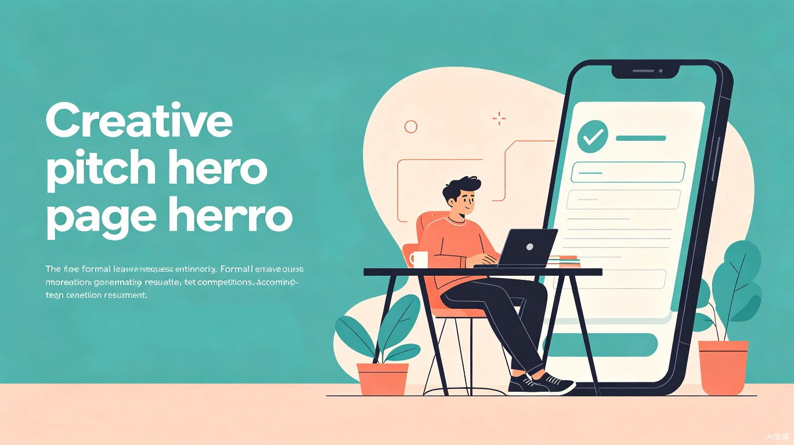

基于 AI 的智能请假条生成工具，让大学生告别繁琐的文字工作，一键生成格式规范、内容得体的请假申请。

请假通 (LeaveNote AI) 是一款面向高校学生的智能请假条生成小程序。用户只需填写简单的请假原因（如"生病了，发烧 38.5 度，需要去医院"），系统即可自动生成符合学校格式的正式请假条，包含称呼、正文、落款、日期等完整要素。
产品以微信小程序为载体，无需下载安装，即开即用。核心功能包括：智能请假理由扩写、多种请假场景模板（病假、事假、实习假等）、格式一键导出、请假记录管理，以及辅导员在线审批对接。我们的目标是让每一条请假申请都变得简单、规范、高效。
输入关键词，AI 自动扩写为措辞得体、格式完整的正式请假条正文。
覆盖病假、事假、实习假、竞赛假、家庭原因等 6+ 常见高校请假场景。
生成的请假条可直接导出为 PDF 或图片，方便打印提交或发送给辅导员。
我们的核心目标用户是全日制在校大学生（大一至大四），尤其是频繁因各种原因需要请假的群体。每年全国在校大学生超过 4000 万，请假场景极为普遍。
小明是一名大二学生，平时需要应对课程、社团活动、实习面试、各类竞赛等多种事务。他经常因为身体不适或临时事务需要请假，但对请假条的正式格式并不熟悉，每次都要在网上搜索模板、参考范文，耗费大量时间却仍然写不好措辞。他希望有一个工具能帮自己快速生成规范、得体的请假条。
大多数学生对请假条的正式格式（称呼、正文、落款、日期）缺乏了解，写出来的请假条常被辅导员打回重写，来回折腾浪费时间和精力。
不知道该用多正式的语气，"请假条"和"请假说明"该写哪个，语气过于口语化或过于生硬，给辅导员留下不好的印象。
网上搜索请假条模板，结果杂乱无章、格式过时、内容模板化严重，很难找到真正适合当前场景的高质量模板。
突发状况（如生病、家里急事）下时间紧迫，学生既焦虑又匆忙，写出来的请假条往往漏洞百出，增加了被拒批的概率。
请假通不仅仅是一个请假条生成工具，更是高校数字化服务生态中的一环。通过 AI 赋能日常流程，我们希望释放学生的注意力，让他们将宝贵的时间投入到学习与成长中。
将请假条撰写时间从平均 15 分钟缩短至 30 秒。学生只需输入关键信息，系统自动完成格式化和措辞优化，大幅减少低效的文字工作。
基于大量真实请假条样本训练的 AI 模型，确保生成的请假条措辞得体、格式规范，降低被辅导员打回修改的概率。
积累请假记录数据，帮助学校管理层分析学生请假趋势，优化教学安排和健康管理策略，为校园数字化治理提供数据支撑。
在 AI 技术飞速发展的今天，将 AI 能力下沉到校园日常场景是教育数字化的重要方向。请假通以一个轻量级的切入点，展示了 AI 如何帮助解决看似微不足道、实则影响数千万学生体验的"小问题"。我们相信，技术的价值不在于追逐宏大叙事，而在于切实改善每个人的日常体验——哪怕只是一张请假条。
未来，请假通还可以扩展为更完整的校园事务助手，覆盖证明开具、奖学金申请、实习推荐信等更多文书场景，真正成为大学生的"校园文书 AI 助手"。